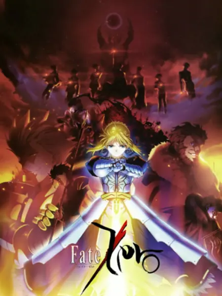
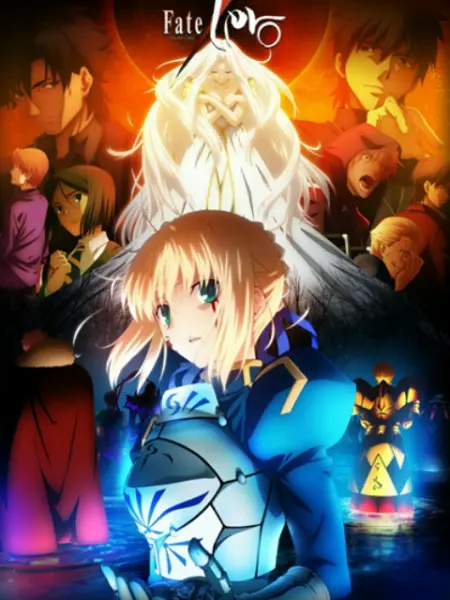
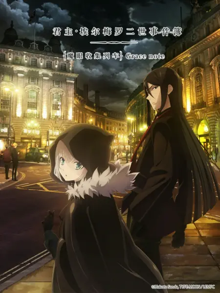

番剧推荐
Fate/Zero 第一季
简介： 作为「Fate/stay night」的前传，「Fate/Zero」的故事舞台设定在第五次圣杯战争的10年前，即第四次圣杯战争； 而在「Fate/stay night」中充满神秘感的卫宫切嗣则会成为「Fate/Zero」的主角。 在虚渊玄优秀的创作能力之下，「Fate/Zero」无论在剧情还是在生动流畅的战斗场面等方面都显得非常优秀。 本片于2011年7月开播，分两季播出。动画制作将继续沿用自「空之境界」系列剧场版便开始合作的ufotable， 监督则由在AIC及ufotable两间制作公司中 均有活跃表现的あおきえい担任。另外，在武内崇的人物原案之下， 人设将交由须藤友德及碇谷敦负责。
点击观看Fate/Zero 第二季
简介：「Fate/Zero」作为「Fate/stay night」的前传，故事舞台设定在「Fate/stay night」的第五次圣杯战争的10年前，即第四次圣杯战争。圣杯战争就是7位御主和7位从者互相厮杀的生死淘汰战。而在「Fate/stay night」中充满神秘感的卫宫切嗣则会成为「Fate/Zero」的主角。在虚渊玄优秀的创作能力之下，「Fate/Zero」无论在剧情还是在生动流畅的战斗场面等方面都显得非常优秀。「Fate/Zero」作为「Fate/stay night」的官方外传小说，在06年11月首次发表，先后发布了4册小说, 包括「第四次圣杯战争秘话」、「王者们的狂宴」、「散落而去的人们」及「炼狱之炎」。 「Fate/Zero」的动画制作将继续沿用自「空之境界」系列剧场版便开始合作的ufotable，监督则由在AIC及ufotable两间制作公...
点击观看君主·埃尔梅罗二世事件簿 魔眼收集列车 Grace note
简介：在「Fate/Zero」中，与征服王伊斯坎达尔一同跨越了第四次圣杯战争的少年，韦伯·维尔维特。时光流转，少年继承了君主·埃尔梅罗的称号，以君主·埃尔梅罗Ⅱ世的身份，在魔术师们的总部·时钟塔面临了各种充满神秘的事件——。进一步拓展了至今为止充满神秘感的TYPE-MOON世界的基础——「魔术世界」的舞台。那个神秘与幻想、魔术与谜题交错的故事即将开演。
点击观看